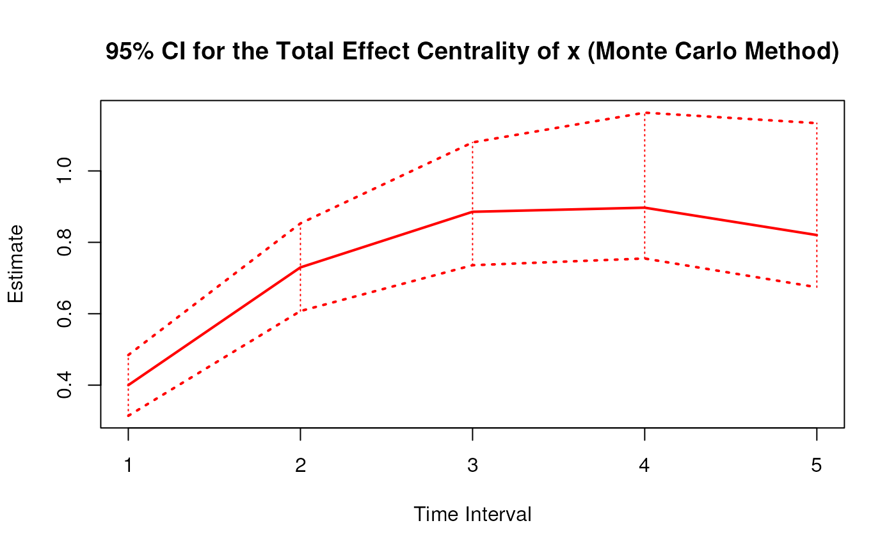
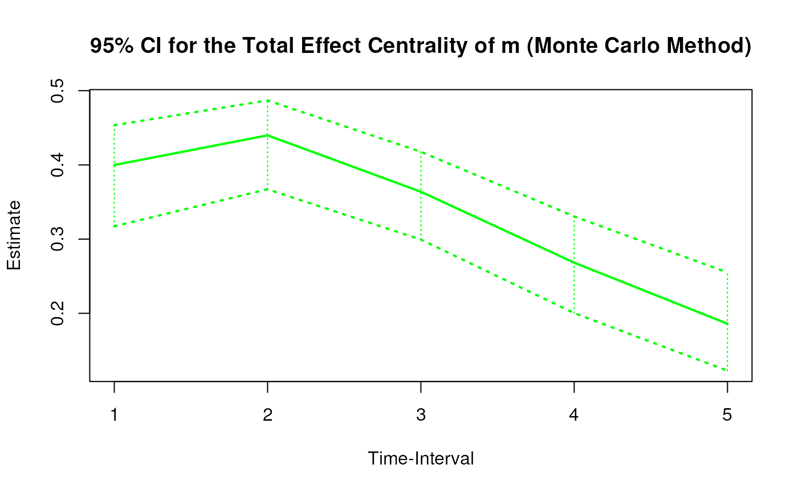
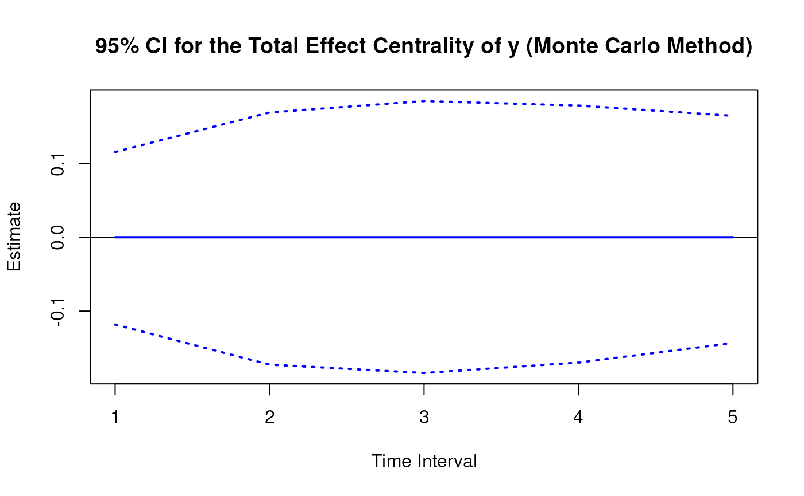
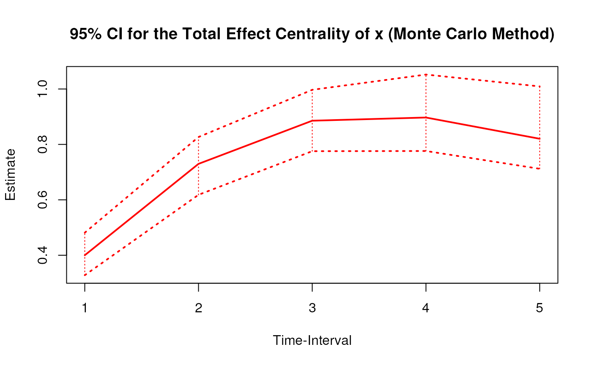
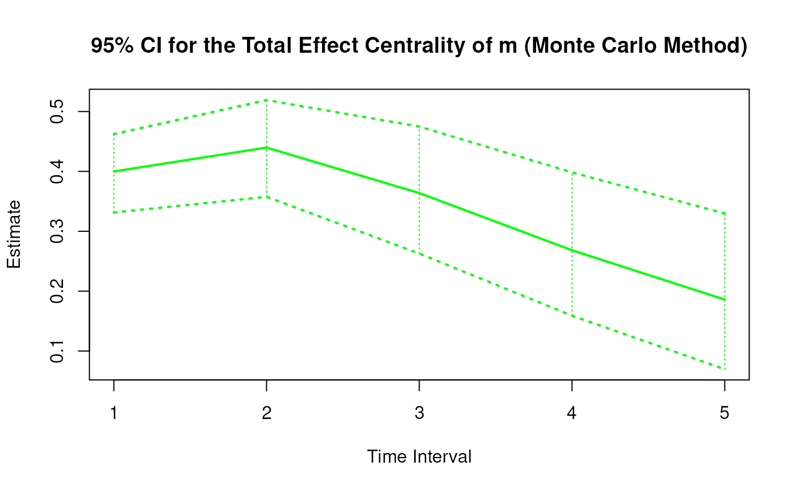
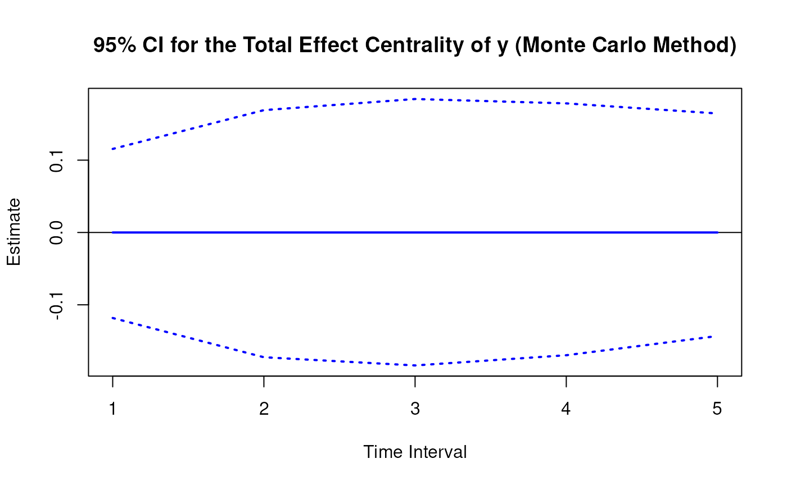

Monte Carlo Sampling Distribution of Total Effect Centrality Over a Specific Time Interval or a Range of Time Intervals
Source:R/cTMed-mc-total-central.R
MCTotalCentral.RdThis function generates a Monte Carlo method sampling distribution of the total effect centrality at a particular time interval \(\Delta t\) using the first-order stochastic differential equation model drift matrix \(\boldsymbol{\Phi}\).
Usage
MCTotalCentral(
phi,
vcov_phi_vec,
delta_t,
R,
test_phi = TRUE,
ncores = NULL,
seed = NULL,
tol = 0.01
)Arguments
- phi
Numeric matrix. The drift matrix (\(\boldsymbol{\Phi}\)).
phishould have row and column names pertaining to the variables in the system.- vcov_phi_vec
Numeric matrix. The sampling variance-covariance matrix of \(\mathrm{vec} \left( \boldsymbol{\Phi} \right)\).
- delta_t
Numeric. Time interval (\(\Delta t\)).
- R
Positive integer. Number of replications.
- test_phi
Logical. If
test_phi = TRUE, the function tests the stability of the generated drift matrix \(\boldsymbol{\Phi}\). If the test returnsFALSE, the function generates a new drift matrix \(\boldsymbol{\Phi}\) and runs the test recursively until the test returnsTRUE.- ncores
Positive integer. Number of cores to use. If
ncores = NULL, use a single core. Consider using multiple cores when number of replicationsRis a large value.- seed
Random seed.
- tol
Numeric. Smallest possible time interval to allow.
Value
Returns an object
of class ctmedmc which is a list with the following elements:
- call
Function call.
- args
Function arguments.
- fun
Function used ("MCTotalCentral").
- output
A list the length of which is equal to the length of
delta_t.
Each element in the output list has the following elements:
- est
A vector of total effect centrality.
- thetahatstar
A matrix of Monte Carlo total effect centrality.
Details
See TotalCentral() for more details.
Monte Carlo Method
Let \(\boldsymbol{\theta}\) be \(\mathrm{vec} \left( \boldsymbol{\Phi} \right)\), that is, the elements of the \(\boldsymbol{\Phi}\) matrix in vector form sorted column-wise. Let \(\hat{\boldsymbol{\theta}}\) be \(\mathrm{vec} \left( \hat{\boldsymbol{\Phi}} \right)\). Based on the asymptotic properties of maximum likelihood estimators, we can assume that estimators are normally distributed around the population parameters. $$ \hat{\boldsymbol{\theta}} \sim \mathcal{N} \left( \boldsymbol{\theta}, \mathbb{V} \left( \hat{\boldsymbol{\theta}} \right) \right) $$ Using this distributional assumption, a sampling distribution of \(\hat{\boldsymbol{\theta}}\) which we refer to as \(\hat{\boldsymbol{\theta}}^{\ast}\) can be generated by replacing the population parameters with sample estimates, that is, $$ \hat{\boldsymbol{\theta}}^{\ast} \sim \mathcal{N} \left( \hat{\boldsymbol{\theta}}, \hat{\mathbb{V}} \left( \hat{\boldsymbol{\theta}} \right) \right) . $$ Let \(\mathbf{g} \left( \hat{\boldsymbol{\theta}} \right)\) be a parameter that is a function of the estimated parameters. A sampling distribution of \(\mathbf{g} \left( \hat{\boldsymbol{\theta}} \right)\) , which we refer to as \(\mathbf{g} \left( \hat{\boldsymbol{\theta}}^{\ast} \right)\) , can be generated by using the simulated estimates to calculate \(\mathbf{g}\). The standard deviations of the simulated estimates are the standard errors. Percentiles corresponding to \(100 \left( 1 - \alpha \right) \%\) are the confidence intervals.
References
Bollen, K. A. (1987). Total, direct, and indirect effects in structural equation models. Sociological Methodology, 17, 37. doi:10.2307/271028
Deboeck, P. R., & Preacher, K. J. (2015). No need to be discrete: A method for continuous time mediation analysis. Structural Equation Modeling: A Multidisciplinary Journal, 23 (1), 61–75. doi:10.1080/10705511.2014.973960
Ryan, O., & Hamaker, E. L. (2021). Time to intervene: A continuous-time approach to network analysis and centrality. Psychometrika, 87 (1), 214–252. doi:10.1007/s11336-021-09767-0
See also
Other Continuous Time Mediation Functions:
BootBeta(),
BootBetaStd(),
BootIndirectCentral(),
BootMed(),
BootMedStd(),
BootTotalCentral(),
DeltaBeta(),
DeltaBetaStd(),
DeltaIndirectCentral(),
DeltaMed(),
DeltaMedStd(),
DeltaTotalCentral(),
Direct(),
DirectStd(),
Indirect(),
IndirectCentral(),
IndirectStd(),
MCBeta(),
MCBetaStd(),
MCIndirectCentral(),
MCMed(),
MCMedStd(),
MCPhi(),
MCPhiSigma(),
Med(),
MedStd(),
PosteriorBeta(),
PosteriorIndirectCentral(),
PosteriorMed(),
PosteriorTotalCentral(),
Total(),
TotalCentral(),
TotalStd(),
Trajectory()
Examples
set.seed(42)
phi <- matrix(
data = c(
-0.357, 0.771, -0.450,
0.0, -0.511, 0.729,
0, 0, -0.693
),
nrow = 3
)
colnames(phi) <- rownames(phi) <- c("x", "m", "y")
vcov_phi_vec <- matrix(
data = c(
0.00843, 0.00040, -0.00151,
-0.00600, -0.00033, 0.00110,
0.00324, 0.00020, -0.00061,
0.00040, 0.00374, 0.00016,
-0.00022, -0.00273, -0.00016,
0.00009, 0.00150, 0.00012,
-0.00151, 0.00016, 0.00389,
0.00103, -0.00007, -0.00283,
-0.00050, 0.00000, 0.00156,
-0.00600, -0.00022, 0.00103,
0.00644, 0.00031, -0.00119,
-0.00374, -0.00021, 0.00070,
-0.00033, -0.00273, -0.00007,
0.00031, 0.00287, 0.00013,
-0.00014, -0.00170, -0.00012,
0.00110, -0.00016, -0.00283,
-0.00119, 0.00013, 0.00297,
0.00063, -0.00004, -0.00177,
0.00324, 0.00009, -0.00050,
-0.00374, -0.00014, 0.00063,
0.00495, 0.00024, -0.00093,
0.00020, 0.00150, 0.00000,
-0.00021, -0.00170, -0.00004,
0.00024, 0.00214, 0.00012,
-0.00061, 0.00012, 0.00156,
0.00070, -0.00012, -0.00177,
-0.00093, 0.00012, 0.00223
),
nrow = 9
)
# Specific time interval ----------------------------------------------------
MCTotalCentral(
phi = phi,
vcov_phi_vec = vcov_phi_vec,
delta_t = 1,
R = 100L # use a large value for R in actual research
)
#>
#> Total Effect Centrality
#>
#> $`1`
#> interval est se R 2.5% 97.5%
#> x 1 0.4000 0.0504 100 0.3120 0.4933
#> m 1 0.3998 0.0387 100 0.3248 0.4864
#> y 1 0.0000 0.0677 100 -0.1541 0.1267
#>
# Range of time intervals ---------------------------------------------------
mc <- MCTotalCentral(
phi = phi,
vcov_phi_vec = vcov_phi_vec,
delta_t = 1:5,
R = 100L # use a large value for R in actual research
)
plot(mc)



# Methods -------------------------------------------------------------------
# MCTotalCentral has a number of methods including
# print, summary, confint, and plot
print(mc)
#>
#> Total Effect Centrality
#>
#> $`1`
#> interval est se R 2.5% 97.5%
#> x 1 0.4000 0.0475 100 0.3141 0.4843
#> m 1 0.3998 0.0381 100 0.3314 0.4624
#> y 1 0.0000 0.0625 100 -0.1182 0.1155
#>
#> $`2`
#> interval est se R 2.5% 97.5%
#> x 2 0.7298 0.0704 100 0.6076 0.8530
#> m 2 0.4398 0.0491 100 0.3576 0.5192
#> y 2 0.0000 0.0896 100 -0.1725 0.1691
#>
#> $`3`
#> interval est se R 2.5% 97.5%
#> x 3 0.8855 0.0906 100 0.7359 1.0799
#> m 3 0.3638 0.0579 100 0.2628 0.4749
#> y 3 0.0000 0.0955 100 -0.1838 0.1845
#>
#> $`4`
#> interval est se R 2.5% 97.5%
#> x 4 0.8970 0.1071 100 0.7547 1.1632
#> m 4 0.2683 0.0650 100 0.1591 0.3984
#> y 4 0.0000 0.0899 100 -0.1697 0.1785
#>
#> $`5`
#> interval est se R 2.5% 97.5%
#> x 5 0.8204 0.1187 100 0.6741 1.1338
#> m 5 0.1859 0.0688 100 0.0697 0.3298
#> y 5 0.0000 0.0790 100 -0.1432 0.1646
#>
summary(mc)
#> variable interval est se R 2.5% 97.5%
#> 1 x 1 0.3999957 0.04745723 100 0.31412650 0.4843171
#> 2 m 1 0.3998356 0.03807419 100 0.33138049 0.4623786
#> 3 y 1 0.0000000 0.06250114 100 -0.11821793 0.1155126
#> 4 x 2 0.7297791 0.07038259 100 0.60757052 0.8530343
#> 5 m 2 0.4398068 0.04914723 100 0.35761705 0.5191776
#> 6 y 2 0.0000000 0.08955308 100 -0.17249164 0.1691486
#> 7 x 3 0.8855303 0.09062810 100 0.73593322 1.0798544
#> 8 m 3 0.3638264 0.05794766 100 0.26284313 0.4749294
#> 9 y 3 0.0000000 0.09545987 100 -0.18381950 0.1845389
#> 10 x 4 0.8970359 0.10710058 100 0.75473326 1.1631643
#> 11 m 4 0.2682593 0.06496555 100 0.15905938 0.3984167
#> 12 y 4 0.0000000 0.08985966 100 -0.16970990 0.1784859
#> 13 x 5 0.8203630 0.11870978 100 0.67414893 1.1337760
#> 14 m 5 0.1859320 0.06881133 100 0.06968015 0.3298242
#> 15 y 5 0.0000000 0.07903072 100 -0.14315100 0.1645563
confint(mc, level = 0.95)
#> variable interval 2.5 % 97.5 %
#> 1 x 1 0.31412650 0.4843171
#> 2 m 1 0.33138049 0.4623786
#> 3 y 1 -0.11821793 0.1155126
#> 4 x 2 0.60757052 0.8530343
#> 5 m 2 0.35761705 0.5191776
#> 6 y 2 -0.17249164 0.1691486
#> 7 x 3 0.73593322 1.0798544
#> 8 m 3 0.26284313 0.4749294
#> 9 y 3 -0.18381950 0.1845389
#> 10 x 4 0.75473326 1.1631643
#> 11 m 4 0.15905938 0.3984167
#> 12 y 4 -0.16970990 0.1784859
#> 13 x 5 0.67414893 1.1337760
#> 14 m 5 0.06968015 0.3298242
#> 15 y 5 -0.14315100 0.1645563
plot(mc)


